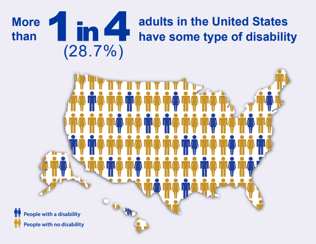

Accessibility is the extent to which the built environment, physical or digital, can be freely used by everyone, with the same level of ease, regardless of disability. In terms of the digital world, web accessibility refers to the extent to which web content can be freely used by everyone, with the same level of ease, regardless of disability.

Infographic by the CDC's National Center on Birth Defects and Developmental Disabilities.
Accessibility is important for a number of reasons:
Financial: 28.7% of adults in the United States are disabled. By making your site accessible, you are expanding your reach to a wider audience, and potentially growing your customer base.
Legal: As of 2024, web content for local or state governments must adhere to WCAG Version 2.1, Level AA.
Moral: Most importantly, making your web content accessible is the right thing to do, regardless of potential legal repercussions or financial motivations. A website’s design should not bar a disabled individual from accessing the resources and information that exist on that website.